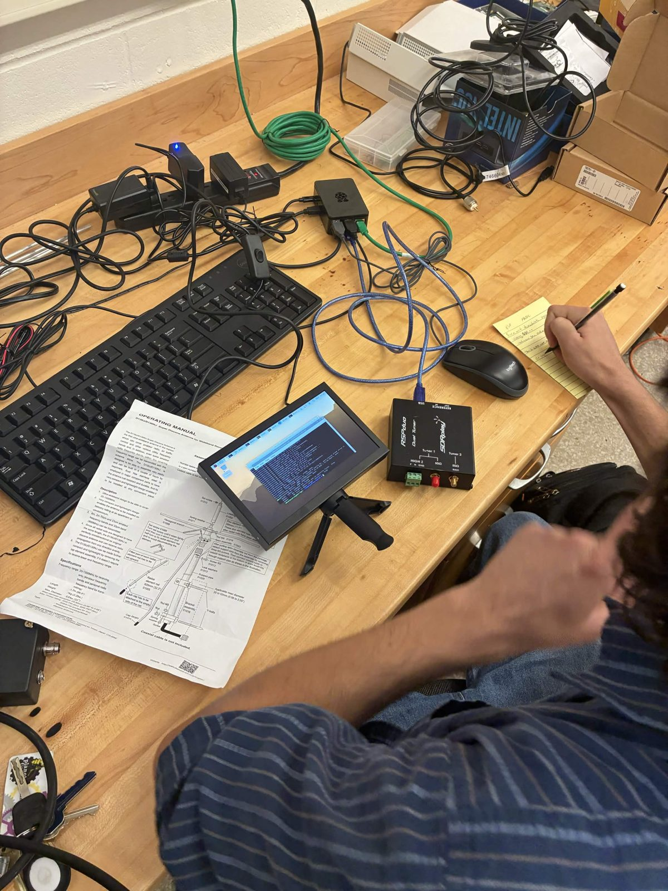

clemson cubesatin design

Research satellites designed and built by Clemson students. The first one is still on the drawing board; we'll post details as it firms up.
A mission is the whole life of a spacecraft: the question it answers, the hardware that answers it, and the operations after launch. We haven't flown yet, so we're setting up how we'll work first.
We don't start a phase until the last one has a written record. Members and outside advisors can sit in on any review.
Research satellites designed and built by Clemson students. The first one is still on the drawing board; we'll post details as it firms up.

A bigger spacecraft that could carry several experiments and run for longer. For now it's an idea and a list of requirements, not a launch date.

We're putting together a receiving station in the lab now: a software radio, a Raspberry Pi, and antennas for satellite passes. A station on campus first, then partner sites around the state so we can hear our spacecraft on more passes.
Most members join without any space experience. Pick a subsystem and learn it next to someone a semester ahead of you.